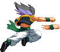


Flurry Punch
Taking a clue from SSJ Goku, Gotenks's standing Medium Punch is a flurry of quick punches
while he slides forward, and ends with a tribute to Bruce Lee in the form of a knuckle punch.
Holding down the Medium punch button has Gotenks performing the flurry punch infinitely, until he hits the opponent
or is hit out of the animation by the opponent.
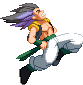


Can-Can Dance
Gotenks shows off his moves by doing a double knee kick,
which is a nice little combo extender and looks fancy!
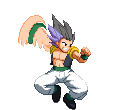


Spin Spin Punch (max wall-bounces)
Tapping the Strong Punch button lets Gotenks swoop out a standard straight punch.
But if you hold the button pressed-in, Gotenks will go into a pose while he spins his arm around very fast,
creating a circle of energy. When you release the button, he dashes forward and delivers a more powerful punch.
There's three levels to this, with the maximum level letting Gotenks dash forward so fast it appears almost instant,
and delivering a punch that creates an explosion on impact, knocking the opponent away hard and bouncing them off the wall.
If you hold Up during the spin spin state, Gotenks will begin to hover. He'll slowly start to descend back down if you let go of Up.
You can cancel the charge by dashing out of it, whether on the ground or in the air.
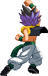

Spin Spin Upper (launches)
Works identical to the Spin Spin Punch (you can even perform it by first holding down
Strong Punch and then later holding down the Back button), except when the move comes out, it's an uppercut
instead of a straight punch.
The maximum-charged version is a huge uppercut with a hit box surrounding Gotenks; it'll even hit the enemy if they are behind you!
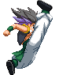


Fantastical Footwork
Gotenks gets fancy! His standing Strong Kick is a 2-in-1 jumping kick,
which on its own is pretty solid. But after the first of those two kicks has hit you can
input either SK for a quick variant of his aerial Strong Kick (flip drop kick)
or down+SK to go directly into his crouching Strong Kick (power slide).
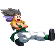
Cossack Dance
Hey Hey Hey! Gotenks can perform his crouching Medium Kick three times in a row,
kicking with left, then right, then left again.
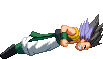
Nut Crusher
A suprise attack to the opponent's lower waist which knocks them away.
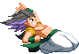
Power Slide
Power Sliiiiide! This attack trips the opponent. Can also be performed while running,
which gives it a bit more range. After tripping the opponent, you can combo into the crouching Strong Punch (Nut Crusher), knocking the opponent away.
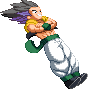

Stand On You
For the jumping Strong Kick, Gotenks flips forward
and then does a downward drop kick with both legs. Mind that it comes out a little slow.
If the kick hits the opponent, Gotenks rebounds upward and will be able to continue with an attack,
for instance an airdash or even his Miracle Blasts.
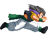


Charging Bull Attack
Moooo! When the Strong punch button is pressed while Gotenks is running, he assumes
his pattented Charging Bull pose. If he hits the opponent with this, he leaps up and they're launched into the air
while he switches sides with them. You can juggle the opponent as they come back down.
If it's blocked, Gotenks staggers backwards.


Miracle Blast
From the air, Gotenks fires a Ki Blast diagonally downward.
The speed the Ki Blast travels at is determined by the Punch button strenght:
Weak is slow, Strong is fast. Medium as always is inbetween.
You can fire another blast by repeating the command or even perform one or two and then
cancel into the EX version, which fires two blasts automatically.
You're able to keep some momentum while fireing these blasts.
Fireing one gives a bit of recoil to Gotenks, delaying his downward trajectory.
The EX version fires two shots, and you can also fire it twice in single jump.
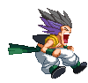
Insult!
Gotenks disses the enemy by
calling them naughty names, realized in a short-to-medium shockwave he shouts out.
This shockwave can cancel out the opponent's Ki Blasts.
The EX version's shockwave travels fullscreen and keeps the enemy stunned in mid-air even longer,
like sitting ducks just waiting to be hit by a follow up attack.
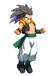

Dynamite Headcrusher
Gotenks charges up, then rockets off into the air.
After a short while, he comes back down like a meteor, head-first, ready to smash into the opponent.
If he hits them, they are knocked down and Gotenks recoils backwards.
If he happens to miss the opponent, Gotenks crashes onto the ground, then staggers backwards.
Luckily, like Goku, he has a head made out of granite. The EX version also hits on the way up.
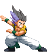


Hero Stance
Gotenks assumes a wicked cool pose, which can lead into one of four
different follow-up attacks which are detailed below.
If you do nothing, Gotenks will remain in the Hero Stance indefinitely.
The Stance is cancelled by pressing any Punch button.
You can also make for a quick escape by pressing Up,
which makes Gotenks instantly perform a Super Jump on the spot.
As long as Gotenks is in the Hero Stance, his power bar will slowly fill up.
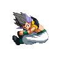

Dynamic Entry!
Gotenks leaps back towards the wall, on which he kicks off and launches himself towards the enemy, butt-first!
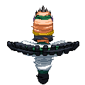

Ballerina Tornado!
A mad tornado kick is unleashed! There are two version of this.
If you don't hold the Medium Kick button down, the opponent will get knocked away by the first kick.
If you do hold the button down, the opponent will get hit multiple times, but won't get knocked away,
thus leaving Gotenks wide open to a counter attack as he goes into a dizzy state after ending the attack.
If during the Tornado you hold Forward, Gotenks will move forward a lot faster!
Holding Backwards, his momentum slows down to a near stand-still.
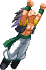
Superman!
Gotenks leaps bravely into the air, hitting anyone who's in his path!
With good insight and timing, this can even be used to quickly pass over projectiles coming towards you
and switching sides with your attacker. After connecting, you can continue with an aircombo on the enemy.
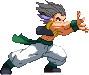

Wolf Fang Fist!
Gotenks unleashes a Berserker Barrage-type move!
There are two variants of the attack. The variant performed with 2P
is the most Berserker Barrage-like, Gotenks dashes forward while doing big slashes
and ends with a wolf blaster. The 2K variant has Gotenks speedily dashing forward
with a leaping kick. Only if the kick hits, will he go into a multi-punch barrage
ending with a wolf blaster. This move's too cool for school!
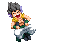

Taunting!!
Thought that Super Buu had many taunts? Gotenks
steps it up by having more variations per situation (standing, crouching or jumping)
AND he has his Ghost Bros joining in on the taunting action! There's a special taunt
when Ghosts are present, by pressing Forward+Start.
Taunts have a bonus feature in that they add a bit to your Finisher Bar.
Do these repeatedly to tick off your opponent!